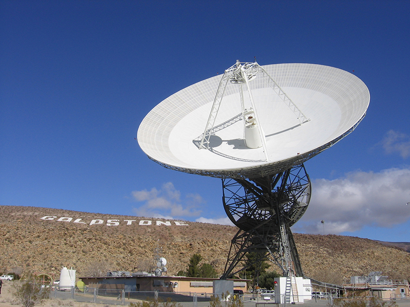
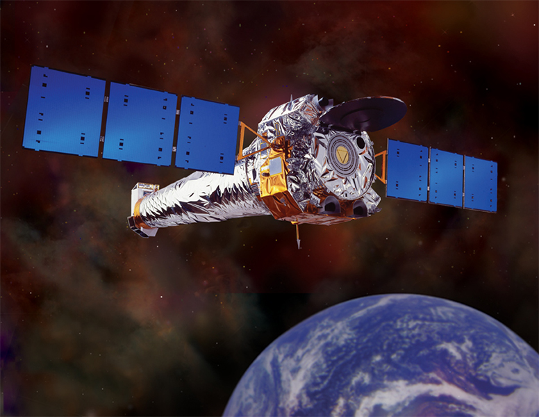
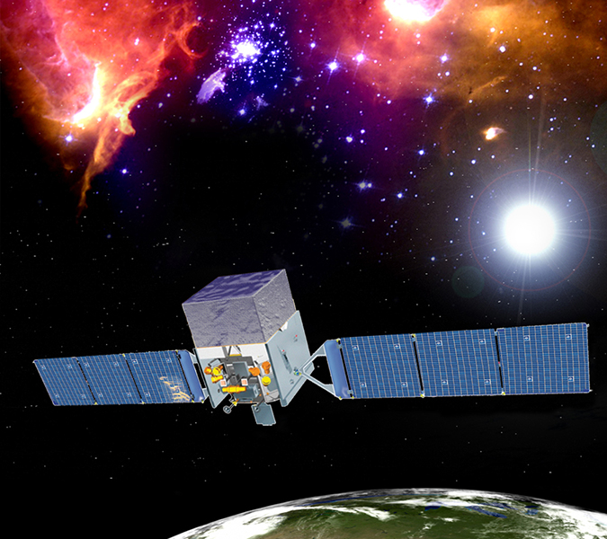
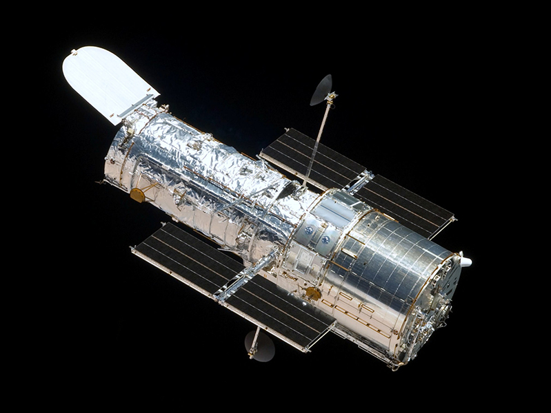

Telescopes

Radio Telescopes
 The radio telescope is a type of telescope that can detect noise from radio waves in space. This is because objects in space give off radio noise. The telescopes are able to listen to the radio waves and process it into information that researchers and scientist can use to study about the objects in space. The radio telescope can also produce an image from the object it is listening to.
X-Ray Telescopes
 The x-ray telescope is used to study the sun, stars and supernovas, an explosion in space. X-ray telescopes usually work better at very high altitudes on the Earth’s surface such as a very tall mountain. However, x-ray telescopes work even better in space. The reason for this is because the Earth’s atmosphere interferes with the x-ray signals the telescope receives, distorting the information it receives.
Gamma Ray Telescopes
 The gamma ray telescope is similar to the x-ray telescopes in that it works best in high altitudes. However, the difference is that x-rays are emitted by electrons outside the nucleus, while gamma rays are emitted by the nucleus. Gamma ray telescopes are mainly used to confirm events in space such as supernovas, pulsars and black holes.
Reflector Telescopes
 The most common telescope is the reflecting telescope, using numerous mirrors to enlarge and project images from a distance. The Hubble Space Telescope is a reflecting telescope and is currently the largest space telescope there is. It is 43 feet long and weighs 24,250 pounds. The Hubble Space Telescope was launched into space on April 24, 1990, from the Space Shuttle Discovery. It is still operational. It has had some work performed on it from time to time, such as installing new state-of-the-art cameras. This telescope has provided researchers with an enormous amount of information that they would have probably never had if it weren’t for the Hubble. It can take pictures of things such as far away galaxies, nebulae, and dying stars.